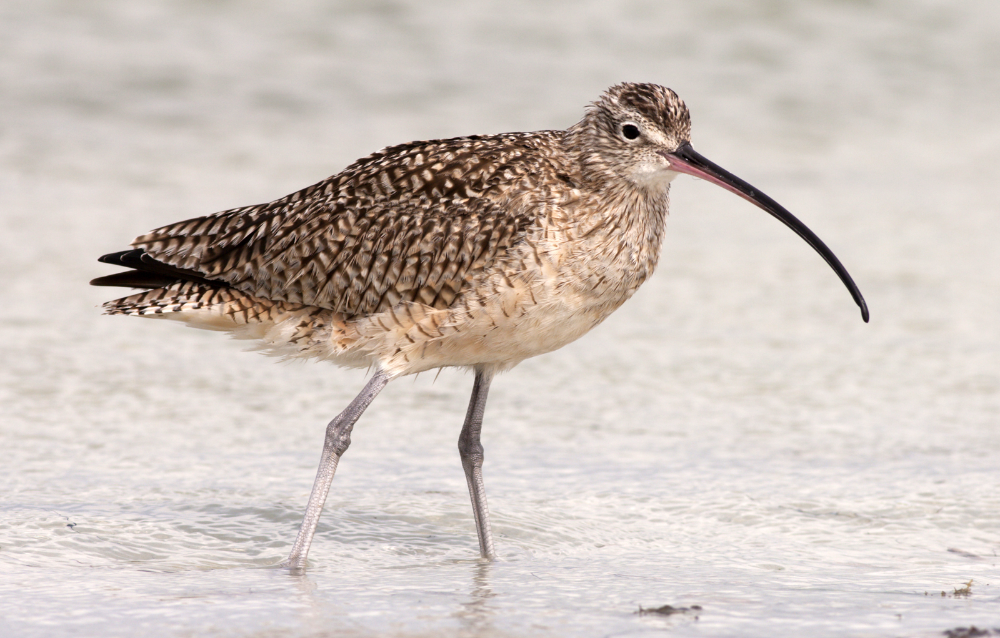

Protected Birds
Protected birds in India :
👉🏻Red Headed Vulture
👉🏻Forest Owlet
👉🏻Jerdon’s Courser
👉🏻Spoon Billed Sandpiper
👉🏻White Winged Wood Duck
👉🏻Great Indian Bustard
👉🏻Great Siberian Crane
👉🏻White Bellied Heron
👉🏻Himalayan Quail
Protected birds in Ireland:
👉🏻Curlew
👉🏻Yellowhammer
👉🏻Lapwing
👉🏻Puffin
👉🏻House Sparrow
👉🏻Kingfisher
👉🏻Hen Harrier
👉🏻Kestrel
👉🏻Barn Owl
Protected birds in Australia:
👉🏻Helmeted honeyeater
👉🏻Eastern Bristlebird
👉🏻Lord Howe Woodhen
👉🏻White-Capped Albatross
👉🏻Eastern Curlew
👉🏻Gouldian Finch
👉🏻Southern Cassowary
👉🏻Albert’s Lyrebird
👉🏻Abbott’s Booby
Protected birds in America:
👉🏻Piping Plover
👉🏻Gunnison Sage-grouse
👉🏻Florida Grasshopper Sparrow
👉🏻California Condor
👉🏻Whooping Crane
👉🏻Florida Scrub-jay
👉🏻Red-cockaded Woodpecker
👉🏻Golden-cheeked Warbler
👉🏻California Least Tern
Protected birds in Denmark:
👉🏻Elegant Tern
👉🏻Eurasian Curlew
👉🏻Pheasants
👉🏻Balearic Shearwater
👉🏻Black-browed Albatross
👉🏻Bustards
👉🏻Egyptian Vulture
👉🏻Sandgrouse
👉🏻Cuckoos
Protected birds in Brazil:
👉🏻Southern Royal Albatross
👉🏻Spectacled Petrel
👉🏻White-Chinned Petrel
👉🏻Waders
👉🏻Minas Gerais Tyrannulet
👉🏻Hooded Seed-Eater
👉🏻Forbes's Blackbird
👉🏻Alagoas Tyrannulet
👉🏻Kinglet Calyptura
Pictures of birds:
👉🏻 - Southern Royal Albatross
- Southern Royal Albatross
👉🏻 - Eurasian Curlew
- Eurasian Curlew
👉🏻 - Piping Plover
- Piping Plover
👉🏻 - Helmeted honeyeater
- Helmeted honeyeater
👉🏻 - Curlew
👉🏻 - Red Headed Vulture
- Red Headed Vulture